Chapter 7 Modeling Volatility
Consider a stock market analyst who is interested in finding out whether to invest in a particular stock or not. What kind of variables will govern her choice? If we focus on modern portfolio theory (MPT), a benchmark model in finance, a rational investor only cares about two variables:
- expected return from a financial asset such as a stock
- risk or volatility underlying this asset
Let \(P_t\) denotes the adjusted closing price for a stock traded in the market. The continually compounded return of this stock is given by:
\[y_t=[log(P_t)-log(P_{t-1})]\times 100\]
According to the MPT as an investor you should care about:
- \(E(y_{t+h}|\Omega_t)\): this is the expected return on the asset, given information at time t
- \(Var(y_{t+h}|\Omega_t)\): this is the expected volatility or risk underlying this asset, given the information at time t.
Note that even though this example is using stock market as the motivation, the same is true for any other time series of interest. I use stock market as an example because here the variance has an intuitive appeal as risk underlying an asset.
Thus far our discussion has focused on modeling the conditional mean of a given time series. For example, consider the following \(ARMA(1,1)\) model for the stock market return:
\[y_t=\phi_0 + \phi_1 y_{t-1} + \theta_1 \epsilon_{t-1} + \epsilon_t ; \quad \epsilon_t\sim WN(0, \sigma^2_\epsilon )\]
From this model, we can obtain the forecast for \(y_{t+h}\) as the conditional mean of \(y_t\) given the information available at time \(t\):
\[f_{t,h}=E(y_{t+h}|\Omega_t)\]
In this sense ARMA models are inherently models for the conditional mean of a stationary time series. Going back to our stock market example, this ARMA model can give us information about how the expected return on a stock will evolve over time.
An important assumption we make in estimating this model is that the error term is homoscedastic, i.e, the error term has a constant variance across observations. However, often this assumption will not be satisfied in data. More importantly in some cases, such as our current example of stock market, making this assumption is conceptually incorrect. This is because in our example, assuming constant variance is equivalent to assuming constant risk underlying a stock. Such an assumption is clearly not desirable for an investor.
Hence, we now need a class of models where \(Var(y_t|\omega_t)\) are not constant over time. Formally, our object of interest in this topic is the conditional variance of a time series, \(y_t\):
\[\sigma_t^2=Var(y_t|\Omega_t)\]
7.1 Some stylized facts about stock market volatility
Before proceeding with formally modeling the conditional variance of a time series, let us establish some stylized facts about financial assets, such as a stock. Below I plot the daily return for SP500 along with its ACF (see Figure 1A and 1B). Using squared returns as a proxy for variance, I also plot squared returns for SP500 and its ACF (see Figure 2A and 2B).
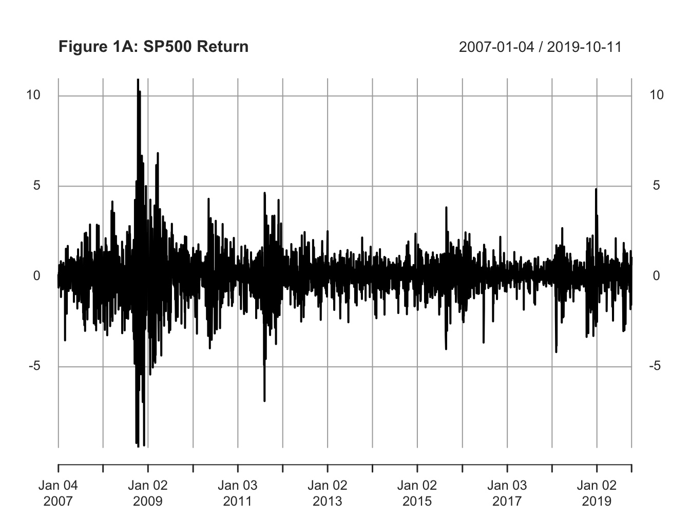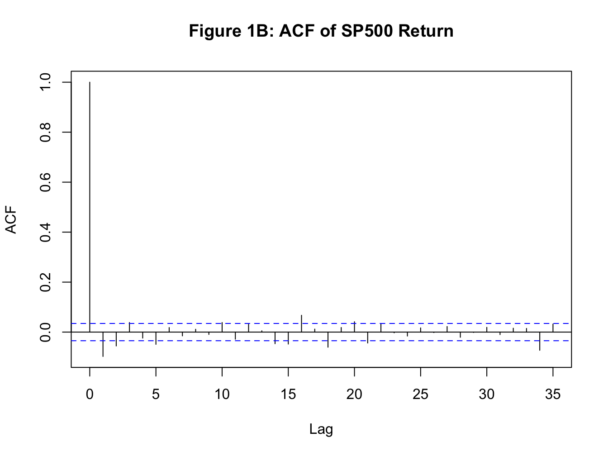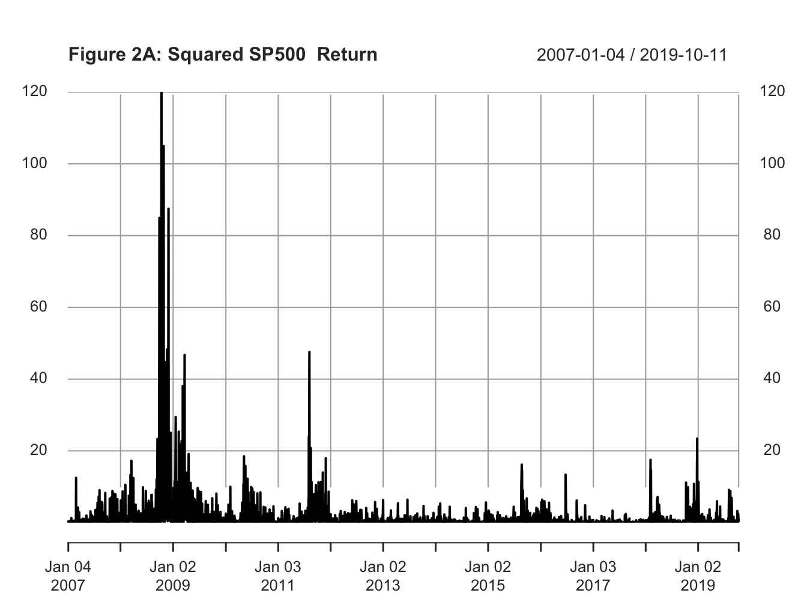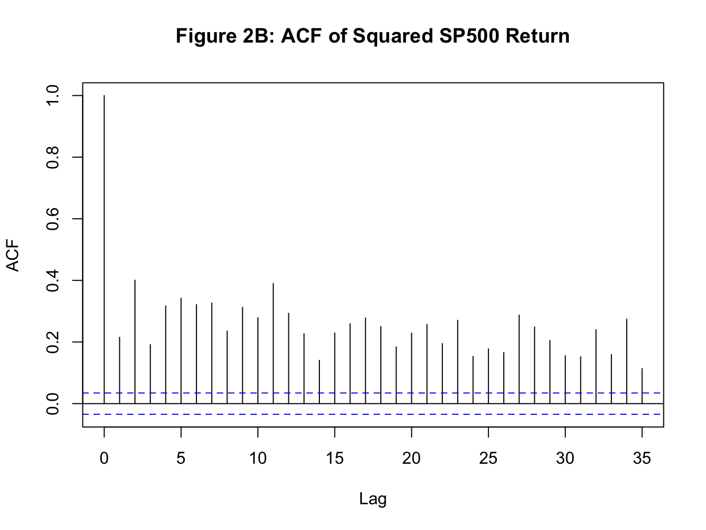
Focusing on the volatility, the plot of squared returns and its ACF establishes the following stylized facts:
From Figure 2A, we observe that large values of squared returns cluster together, and small values of squared returns cluster together. That is periods of high volatility are followed by periods of high volatility and periods of low volatility are followed by periods of low volatility. This phenomenon is known as volatility persistence or volatility clustering in the fields of economics and finance.
A more direct evidence for volatility persistence can be inferred from the ACF plot of squared returns. From Figure 2B, we observe a strong positive serial correlation in squared returns.
Hence, it is reasonable to assume that the variance of a financial time series may not be constant over time. Next we learn two classes of models that have been suggested to model conditional variance of a time series.
7.2 ARCH(q): Autoregressive Conditional Heteroscedasticiy of order \(q\)
Engle (1982) proposed a non-linear model for the conditional variance of a stationary time series where past squared shocks affect current volatility. For simplicity, let us assume that we are not interested in modeling the mean of the time series. Hence, our model for the mean is a constant value, \(\mu\). Then, an \(ARCH(1)\) model can be specified as follows:
\[\text{Mean Model:} \quad y_t = \mu +\epsilon_t \quad \text{where} \ \epsilon_t=\nu_t \sigma_t \ \text{and} \ \nu_t\sim N(0,1)\]
\[\text{Variance Model:} \quad \sigma_t^2=\omega +\alpha_1 \epsilon_{t-1}^2 \text{where} \ \omega>0 \ \text{and} \ \alpha_1>0 \]
In this model the unconditional variance of the time series is constant, but the conditional variance depends on the past squared error term. The variance model can be easily generalized to include \(q\) past shocks which gives us \(ARCH(q)\)
\[\text{Variance Model:} \quad \sigma_t^2=\omega +\alpha_1 \epsilon_{t-1}^2+\alpha_2 \epsilon_{t-2}^2 +\alpha_3 \epsilon_{t-3}^2 +...+ \alpha_q \epsilon_{t-q}^2 \] \[\text{where} \ \omega>0 \ \text{and} \ \alpha_i>0 \ \forall \ i\]
7.3 GARCH(p,q): Generalized Autoregressive Conditional Heteroscedasicity of order \(p\) and \(q\)
A generalization of the above ARCH model was proposed by Bolerslev (1986) where the conditional variance in the current period depend on past squared shocks as well as past observations of the conditional variance. This model is known as \(GARCH\) which stands for generalized ARCH model. Formally, the variance equation of a \(GARCH(1,1)\) is given by:
\[\quad \sigma_t^2=\omega +\alpha_1 \epsilon_{t-1}^2 +\beta_1 \sigma^2_{t-1} \quad \text{where} \ \omega>0, \ \alpha_1>0, \ \text{and} \ \beta_1>0 \]
In practice most models of volatility now use some version of GARCH(1,1) as it provides a more parsimonious model of volatility when compared to an ARCH(q) model. Following are few important properties of a standard GARCH(1,1) model:
Unconditional variance: The unconditional variance of \(y_t\) is still constant due to stationarity and is given by: \[\sigma^2_y = \frac{\omega}{1-\alpha_1-\beta_1}\]
Volatility persistence: the persistence is given by \(\alpha_1+\beta_1\).
Half-life measure: R is the number of periods it takes for the estimated volatility to converge to half of the unconditional variance of the time series.
7.4 Extensions of standard GARCH model
There are two issues with the standard GARCH model that merits more discussion:
- In the standard GARCH framework, the effect of past shocks on volatility is symmetric. That is whether the observed shock is negative or positive, the effect on the volatility is the same. However, in the financial market another stylized fact is the asymmetric response of volatility to news. For instance, it is quite common to find that negative news increases volatility more than the reduction in volatility caused by positive news. One analytical tool to illustrate this point is the news impact curve where we plot the shock on the x-axis and estimated/predicted volatility from our GARCH model on the y-axis. Below I plot three types of news impact curves. In the first case, the curve is symmetric: negative and positive shocks have identical effect on volatility. In the second case, negative news has a bigger effect on volatility, and finally in the third case, positive news has a bigger effect on volatility.
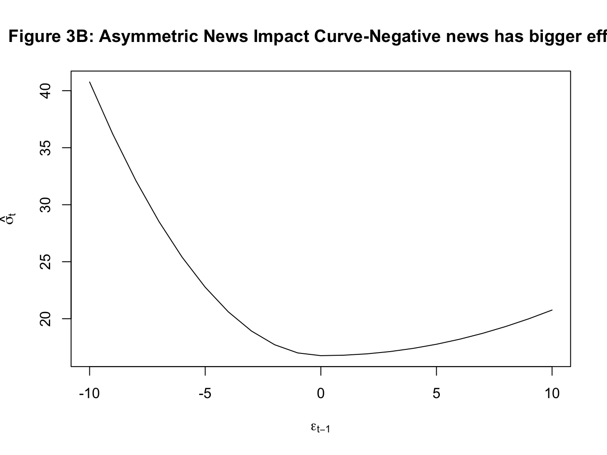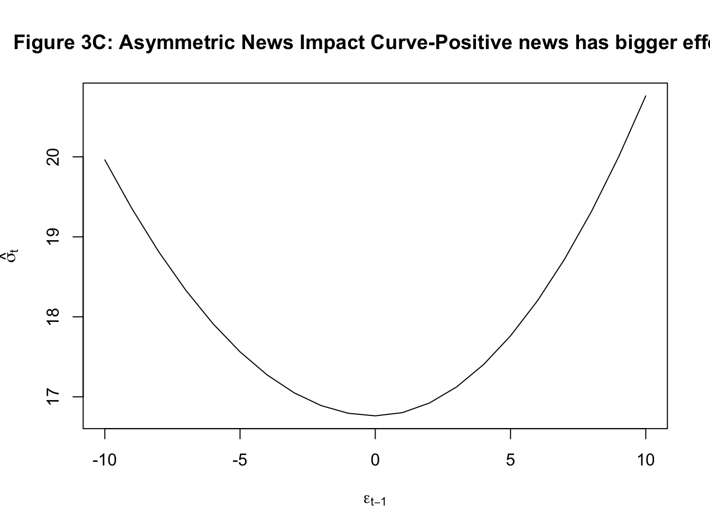
- Because these models are models of variance which cannot be negative, the estimation of these models imposes non-negativity condition on all estimated parameters. For instance, in \(GARCH(1,1)\) we assume that \(\omega, \alpha_1, \ \text{and} \ \beta_1\) are all positive.
7.4.1 GJR-GARCH(1,1)
Glosten, Jagannathan, and Runkle (1993) proposed a variation of the standard GARCH model that incorporates the asymmetry of the impact of news on volatility. The resulting model is called GJR-GARCH and it addresses the first of the issues listed above. Formally, the variance equation of the GJR-GARCH(1,1) is given by:
\[ \sigma_t^2=\omega+\alpha_1 \epsilon^2_{t-1}+\beta_1 \sigma^2_{t-1}+\gamma_1 D_{t-1}\epsilon^2_{t-1}\]
where \(D_{t-1}=1\) if \(\epsilon_{t-1}<0\) and \(0\) otherwise. Hence, now the effect of \(\epsilon^2_{t-1}\) on volatility is \(\alpha_1+\gamma_1\) for negative shocks and \(\alpha_1\) for positive shocks. The news impact curve from this model will be asymmetric. The persistence from this model will also be affected by \(\gamma_1\). Specfically for the GJR-GARCH(1,1) model,
Persistence: \(\alpha_1+\beta_1 +\frac{\gamma_1}{2}\)
Unconditional variance: \[\sigma^2_y = \frac{\omega}{1-\alpha_1-\beta_1-\frac{\gamma_1}{2}}\]
7.4.2 Exponential GARCH or EGARCH(1,1)
Exponential GARCH model by Nelson (1991) accounts for both the issues outlined above. It allows for asymmetric effects of shocks and also does not require the non-negativity constraints. More importantly, it also accounts for different effect of shocks of different magnitude, and hence provides an estimate of the size effect. Formally, the variance equation for EGARCH(1,1) is given by:
\[ln(\sigma^2_{t-1})=\omega+ \alpha_1 z_{t-1} +\gamma_1 (|z_{t-1}|-E|z_{t-1}|) +\beta_1\sigma^2_{t-1}\]
where \(z_t=\frac{\epsilon_t}{\sigma_t}\) is the standardized error term. Here, \(\alpha_1\) captures the sign effect and \(\gamma_1\) captures the size effect. A common finding is that negative news and larger shocks have bigger effect on volatility. Accordingly, we often find in empirical applications of EGARCH that \(\alpha_1<0\) and \(\gamma_1>0\). For this model, we have
Persistence: \(\beta_1\)
Unconditional variance: \[\sigma^2_y = \frac{\omega}{1-\beta_1}\]
7.5 Application of GARCH model: Estimating volatility of SP500 return
In this application, we will estimate the volatility underlying SP500 returns (Figure 1A and Figure 2A). The first step is to test whether squared returns have ARCH effects i.e, whether there is any evidence for time-varying volatility in our data. For this purpose we will use Engle’s ARCH test. Consider our constant mean model:
\[y_t=\mu +\epsilon_t\]
We can estimate the above model by OLS and obtain residuals \(e_t=y_t-\hat{y_t}\). The test for ARCH effects is based on the idea that if there is conditional hetroscedasiticity in our data then the squared residuals will have serial correlation. The ARCH test involves estimating the following regression:
\[e^2_t= \beta_0 +\beta_1 e^2_{t-1} + \beta_2 e^2_{t-2}+...+ \beta_p e^2_{t-p} + u_t\]
Then, the test for ARCH effects is given by:
\[H_0: \beta_1=\beta_2=...=\beta_p=0 \ \Rightarrow \text{no ARCH effects}\] \[ H_A: \text{Not} \ H_0\]
In R, we use a package called aTSA to implement this test.The function is called arch.test(). Figure 7.1 below shows the results of this test for our data.
library(aTSA)
library(forecast)
fit=arima(y, c(0,0,0))
arch.test(fit)## ARCH heteroscedasticity test for residuals
## alternative: heteroscedastic
##
## Portmanteau-Q test:
## order PQ p.value
## [1,] 4 1097 0
## [2,] 8 2317 0
## [3,] 12 3633 0
## [4,] 16 4240 0
## [5,] 20 4963 0
## [6,] 24 5602 0
## Lagrange-Multiplier test:
## order LM p.value
## [1,] 4 2247 0
## [2,] 8 709 0
## [3,] 12 412 0
## [4,] 16 279 0
## [5,] 20 220 0
## [6,] 24 175 0Figure 7.1: ARCH LM test
We find strong evidence for ARCH effects in our data as the null hypothesis of no ARCH effects is rejected at different orders of serial correlation in squared residuals. Next we estimate three types of GARCH(1,1) models using the rugarch package. Tables 7.1A-7.1D below show the estimated parameters of these three models. The news impact curve for these 3 classes of GARCH model are plotted in Figure 2-4 below. Finally, the estimated conditional volatility from the three models are plotted along with the return in Figures 5-7. We find that there is strong evidence for the sign effect with negative news having a bigger effect on volatility as indicated by the positive value for \(\gamma_1\) in GJR-GARCH and negative value of \(\alpha_1\) in EGARCH. Further, in the EGARCH model we find evidence for the size effect as indicated by positive value for \(\gamma_1\). These findings are confirmed by the asymmetric news impact curves for the GJR-GARCH and EGARCH models.
| Estimate | Std. Error | t value | Pr(>|t|) | |
|---|---|---|---|---|
| mu | 0.068 | 0.014 | 4.984 | 0 |
| omega | 0.028 | 0.004 | 6.907 | 0 |
| alpha1 | 0.137 | 0.013 | 10.316 | 0 |
| beta1 | 0.843 | 0.013 | 63.877 | 0 |
| Estimate | Std. Error | t value | Pr(>|t|) | |
|---|---|---|---|---|
| mu | 0.028 | 0.014 | 2.082 | 0.037 |
| omega | 0.028 | 0.003 | 8.234 | 0.000 |
| alpha1 | 0.000 | 0.013 | 0.000 | 1.000 |
| beta1 | 0.861 | 0.013 | 66.481 | 0.000 |
| gamma1 | 0.225 | 0.023 | 9.631 | 0.000 |
| Estimate | Std. Error | t value | Pr(>|t|) | |
|---|---|---|---|---|
| mu | 0.031 | 0.012 | 2.499 | 0.012 |
| omega | 0.000 | 0.003 | -0.118 | 0.906 |
| alpha1 | -0.182 | 0.013 | -13.795 | 0.000 |
| beta1 | 0.968 | 0.004 | 266.919 | 0.000 |
| gamma1 | 0.160 | 0.015 | 10.974 | 0.000 |
| GARCH(1,1) | GJR-GARCH(1,1) | EGARCH(1,1) | |
|---|---|---|---|
| Persistence | 0.980 | 0.974 | 0.968 |
| Unconditional Variance | 1.393 | 1.058 | 0.987 |
| Half-life | 34.552 | 26.109 | 21.172 |
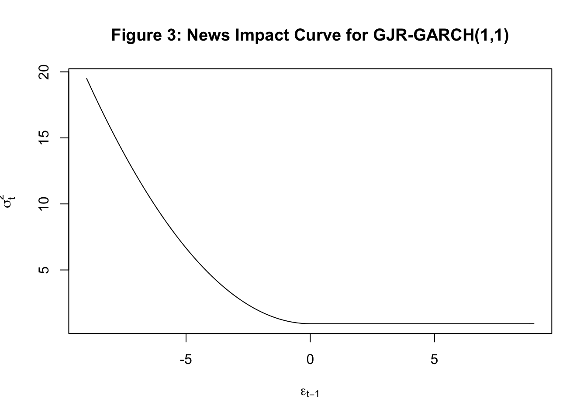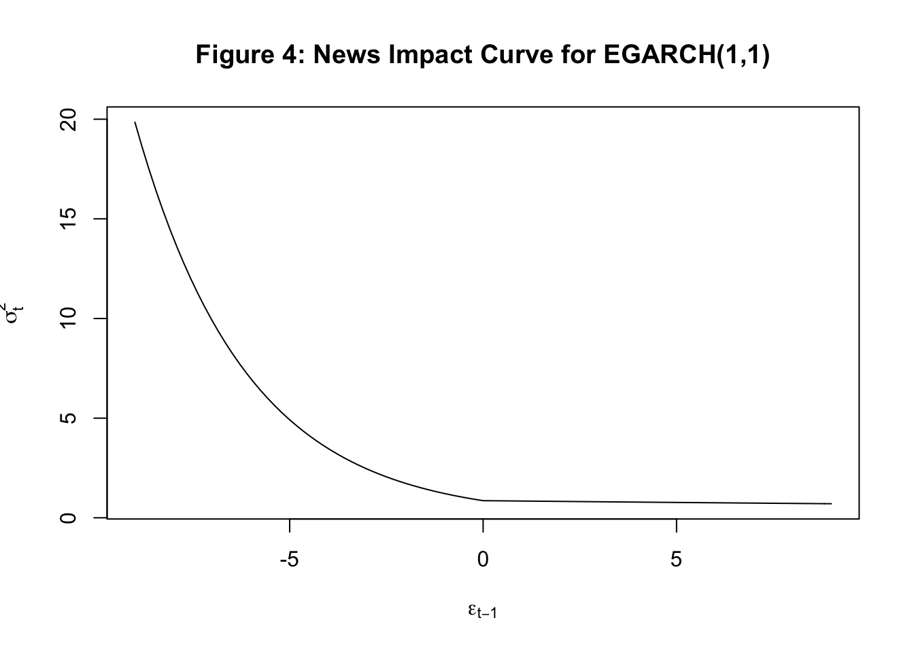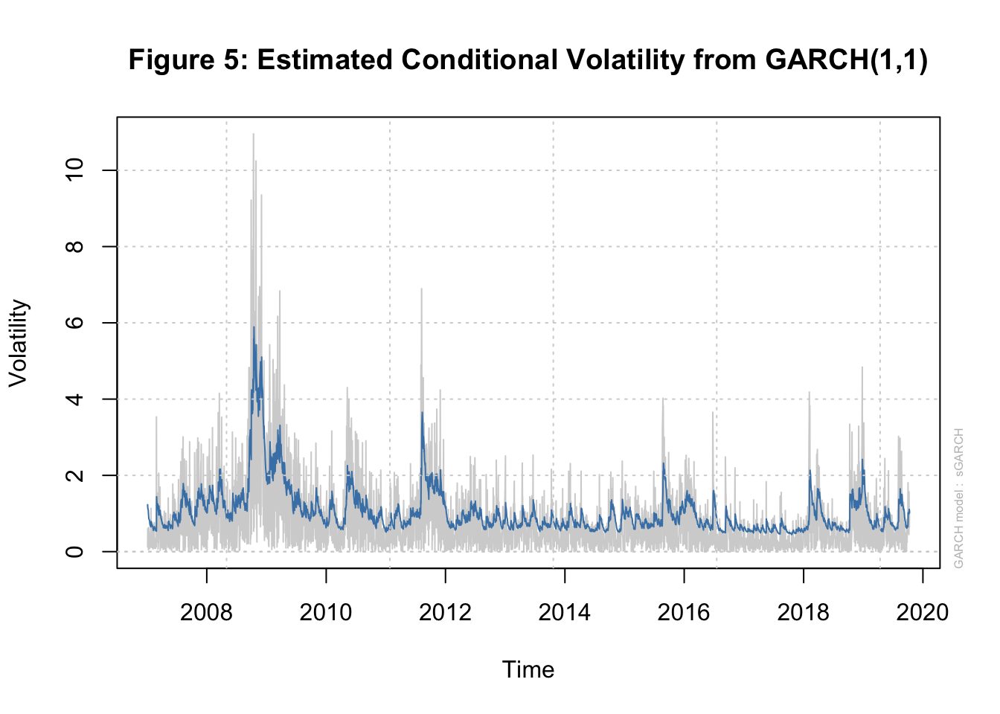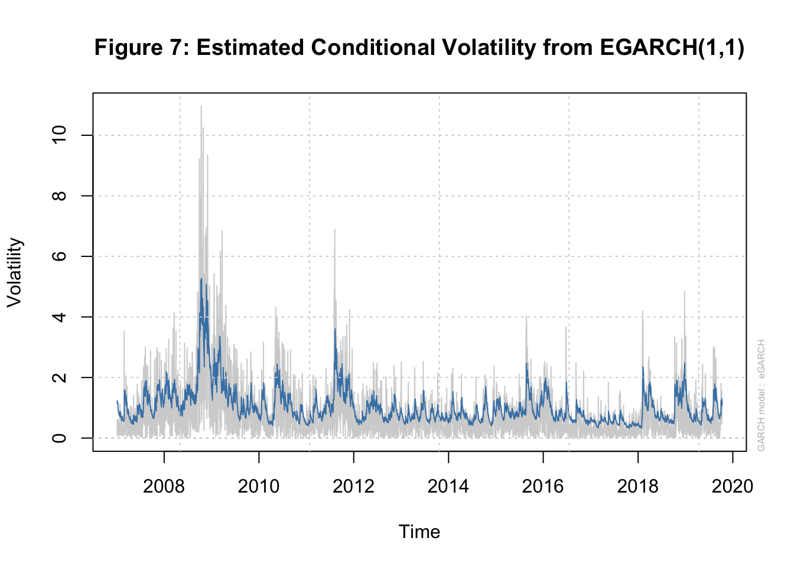
Finally, these models can also be used to forecast the volatility of SP500. Figure 8 below shows this forecast for the next 7 days from the EGARCH(1.1) model.
 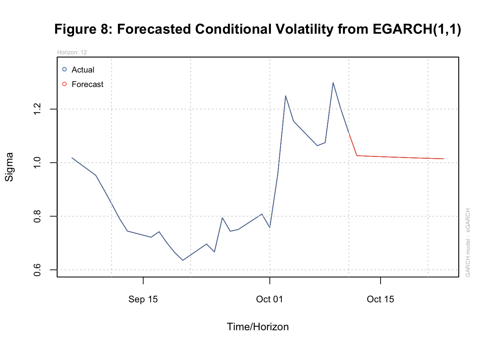
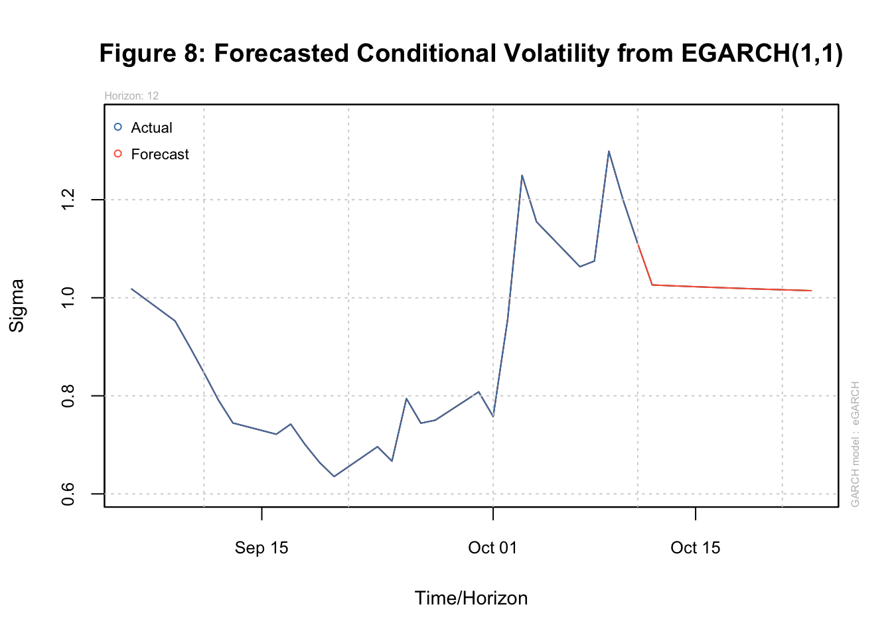